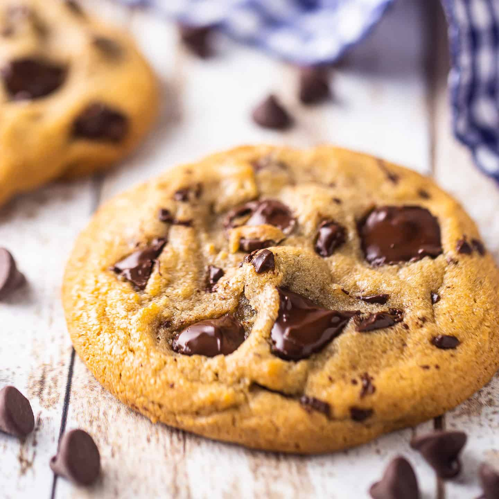

Chocalate Chip Cookies

Chocolate chip cookies are easy to bake and delicious
This recipe can be made from scratch in less than 20 minutes
You'll need a whisk for mixing, a spatula, baking sheet, large bowl and something to meaure ingredients.
,
Ingredients
- 1/2 cup butter
- 1/2 cup granulated sugar
- 1/4 cup of brown sugar
- 2 teaspoons vanilla extract
- 1 large egg
- 1 3/4 cups all purpose flour
- 1/2 teaspoon baking soda
- 1/2 teaspoon kosher salt
- 1 cup semisweet chocolate chips
Steps
- Preheat the oven to 350 F.
- Microwave the butter for about 40 seconds. Butter should be completely melted but shouldn't be hot.
- In a large bowl, mix butter with sugars until well-combined.
- stir in vanilla and egg until incorporated.
- Add the flour, baking soda, and salt. Be sure that the flour is loose in the measuring cup as packing it in could lead to adding more than desired.
- Mix dough until just combined. Dough should be soft and a little sticky but not overly sticky.
- Stir in chocolate chips.
- Scoop out 1.5 tablespoons of dough and place 2 inches apart on your baking sheet.
- Bake for 7-10 minutes, or until cookies are set. They will be puffy and still look a little underbaked in the middle.
You're done!
Now just let your cookies cool down and enjoy!